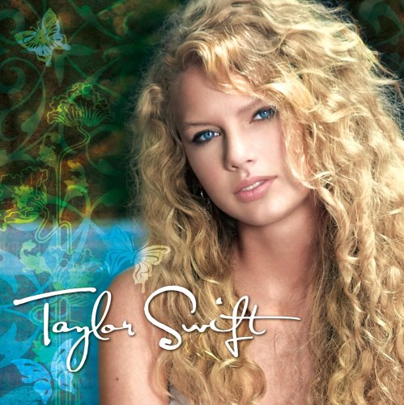
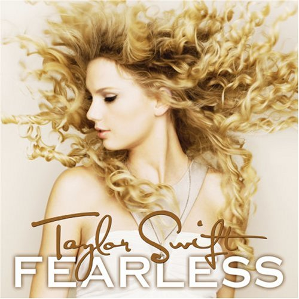
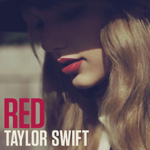
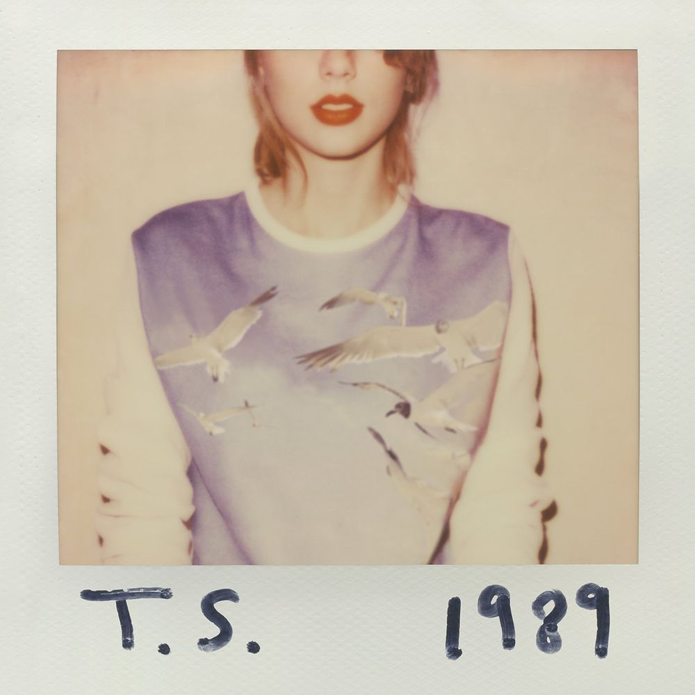
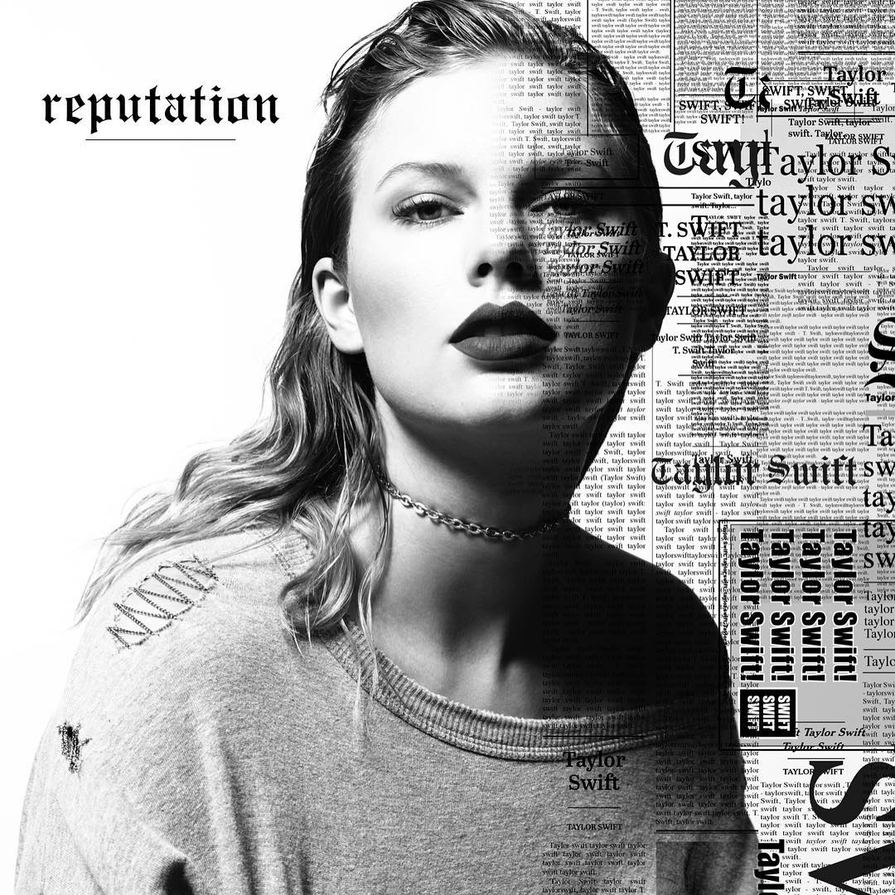

- 간단한 소개
- 대표곡 및 추천곡
Taylor Swift
본명: Taylor Alison Swift (테일러 앨리슨 스위프트)
1989년 12월 13일 생으로 미국 국적의 가수이다. 2006년 데뷔한 이후로 지금까지 영미권 대중음악계를 대표하는 월드스타 중 한 명이다. 실제로 빌보드의 2010년대 가장 성공한 여성 음악가, 남녀 전체에서는 2위로 선정된 것이 이를 증명해준다.
앨범 판매량, 싱글, 투어와 팬덤 규모, 그래미 및 평단 등 다방면에서 밸런스를 갖춘 커리어를 지닌 가수 중 한 명이다. 특히 앨범 판매량과 투어에 있어서는 압도적이다.
미국에서 총판 100만 장만 넘겨도 성공했다는 소리를 듣는 시대에 1집부터 6집까지 400만 장 이하로 판 앨범이 없을 정도로 대단한 판매량을 자랑하고 있으며, 팝으로 전향한 이후부터는 약하다고 지적받았던 싱글 차트 부문에서도 좋은 성과를 보여주고 있다.
또한 2006년 데뷔 때부터 2020년 지금까지 발매한 8개의 정규앨범을 빠짐없이 모두 성공시켰다.
싱어송라이터로 자신의 곡 모두를 자신이 직접 또는 공동 작사, 작곡한다. 빌보드 차트에 진입한 자신의 모든 노래의 작사작곡에 참여하였으며 특히 3집 "Speak Now"는 전 곡의 송라이터 목록에 테일러 스위프트 한 명의 이름만이 기재되어 있다.
이는 한 곡에 5~6명씩, 많으면 10명 이상이 달라붙어서 공동작업을 하는 경우가 태반인 현실에서 실로 대단한 것이다.
공동작곡가들도 자신은 별로 한 것이 없으며 테일러가 거의 다 했다는 말을 할 정도로 자신에 음악에 대한 참여도가 높으며 자신의 음악으로 여러 주요 매체에서 싱어송라이터로서의 음악성을 평가받고 있다.
-앨범-

1집 Tayolr Swift (2006)

2집 Fearless (2008)

3집 Speak Now (2010)

4집 Red (2012)

5집 1989 (2014)

6집 reputation (2017)
7집 Lover (2019)
8집 folklore (2020)